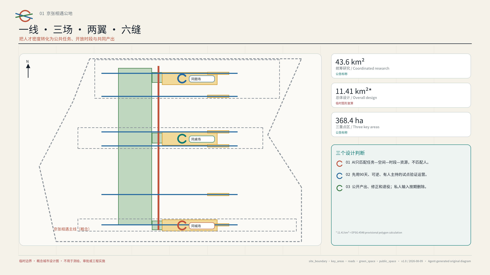
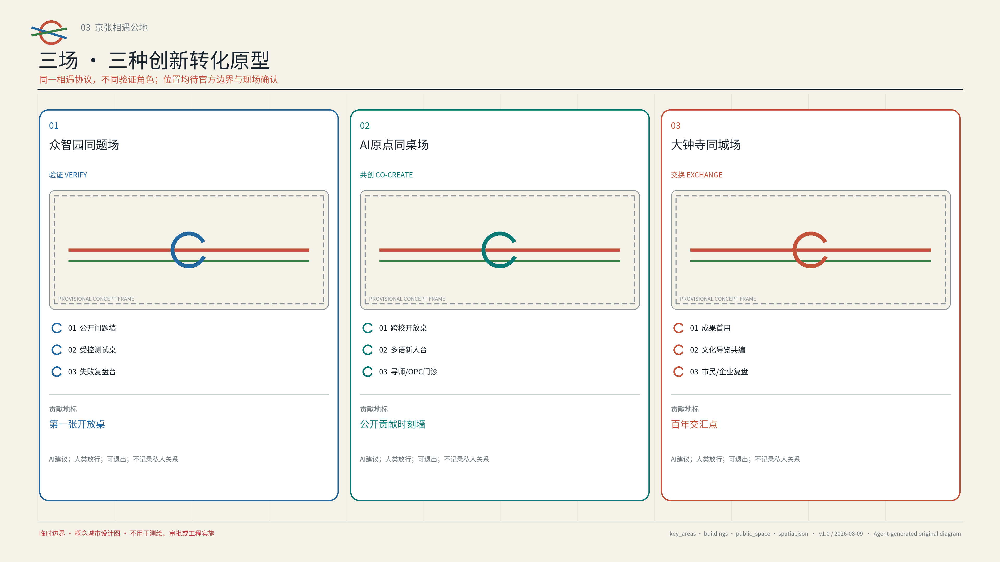
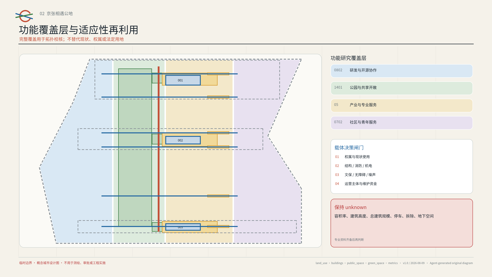
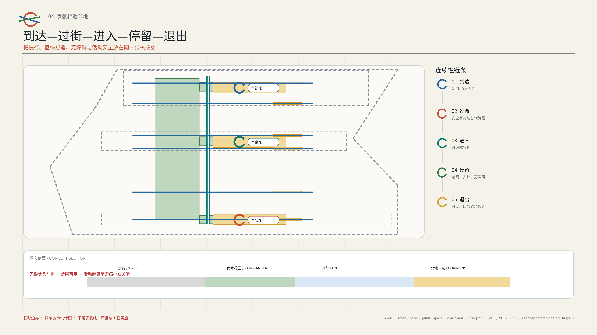
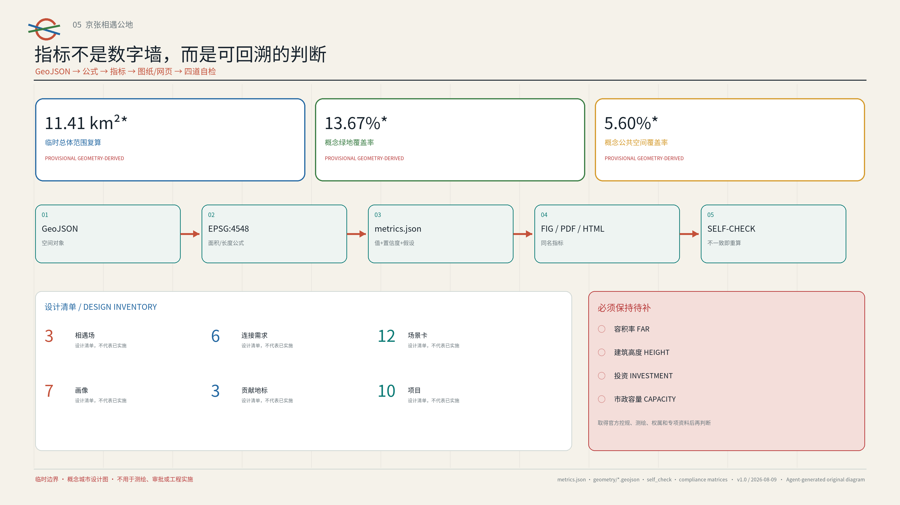

京张相遇公地 / JINGZHANG ENCOUNTER COMMONS
以一条相遇主线、三座相遇场和十二个可退出场景，把百年京张 AI 创新带建设为面向全球青年 AI 人才的社会基础设施；AI 只匹配公共任务、开放空间、时段与资源，不匹配私人关系。
京张相遇公地 / JINGZHANG ENCOUNTER COMMONS
让高密度人才，产生高质量连接。 AI lowers the cost of encounter; people decide whether to travel together.
设计依据与资料清单
本方案把“全球 AI 创新人才向往的高品质城区”翻译成一个可测试的城市设计问题：人才密度已经很高，公共问题、开放空间、可用时段和协作资源却分散在不同组织与界面中，偶遇难以转化为共同产出。海淀官方材料已经把 AI 原点社区描述为创业、交往、成长友好的青年社区；另一份官方报道指出科技青年存在社交圈较窄、情感支持不足等现实困境，并开展“未来关系实验室”实践；2026 年启用的人才服务流动站则提供了公共服务导航的在地基础。本方案据此提出“社会基础设施”而非交友产品：AI 只降低发现公共任务与共同资源的成本，人与人是否同行始终由本人决定。来源 来源
资料采用三级证据秩序。第一层是公告、公开任务书、仓库标准与海淀政府公开页面，用于界定目标、范围和在地基线；第二层是六个城市或园区的一手机制案例，只用于提炼可迁移方法；第三层是本方案的概念图层、指标与运营假设，只是设计建议。每条来源的发布者、链接、用途、许可状态和限制记录在 sources.json，每个不确定条件记录在 assumptions.json。来源 标准
当前仓库没有官方精确总体范围和三处重点区 polygon。geometry/site_boundary.geojson 与 geometry/key_areas.geojson 沿用组织方提供的 provisional rough geometry，属性均明确 official_boundary=false；图中虚线只用于构图、自检和可讨论的面积复算，不是官方红线、道路红线、权属线或审批依据。公开的 43.6 平方公里、约 11.4 平方公里和 368.4 公顷是公告标称规模；11,412,825.386 平方米是临时 polygon 在 EPSG:4548 下的计算结果，两者不能混作精确法定面积。官方 geometry 到位后，所有图层、比例和图纸必须整体复算。来源 [assumption:A-BOUNDARY-001]
所有空间动作均为“概念建议、参考方案、可供专业团队深化研究”。方案不作容积率、建筑高度、具体拆改留、道路或轨道线位、市政容量、投资、权属、审批与开发时序的最终判断；不把活动设想写成政府承诺，也不使用个人隐私、未获授权的企业资料或未向公众开放的规划资料。标准 深度
三层范围工作框架
三层范围不是三套互不相干的图纸，而是“战略—系统—原型”的递进。43.6 平方公里统筹研究范围负责连接高校、研究机构、企业、社区与区域创新资源；约 11.4 平方公里总体设计范围负责把连接转化为公共空间、慢行、服务与运营网络；368.4 公顷三处重点区负责验证三种可复制的相遇原型。公告标称的众智园 192.1 公顷、AI 原点社区 104.3 公顷、大钟寺 72.0 公顷只用于任务分解，临时矩形不得被解释为地块边界。来源 深度
总体结构为“一线、三场、两翼、六缝、十二景”。“一线”是沿京张公共空间序列组织的相遇主线；“三场”是众智园同题场、AI 原点同桌场和大钟寺同城场；“两翼”分别是中关村科技服务翼与小月河场景赋能翼；“六缝”是概念性的东西向弱连接走廊，用于检查跨路、跨园、跨校和无障碍断点；“十二景”是可以小规模上线、评估并退出的日常场景。它不是新增基础设施走廊或法定规划结构，而是一张把任务、空间、时段、资源和责任人放在同一界面的运营地图。空间数据 指标

三层之间通过一个公开台账闭环：统筹层发布可被验证的公共问题与资源；总体层登记候选空间、开放时段、无障碍与安全条件；重点区层运行受控试点；每次试点形成公开产出、复盘与退出记录，再决定复制、修改或归档。任何没有完成现场踏勘、权属协调、消防与专业复核的节点只能停留在候选状态。[assumption:A-SITE-VERIFY-001] 深度
统筹研究范围产业与未来城市研究
方案把 AI 创新生态理解为七种可共享要素的协同，而不是企业名单：公共问题、人才与导师、试验空间、合规与知识产权服务、算力和工具、首用场景、公开反馈。众智园侧重“全栈技术—受控验证”，AI 原点侧重“跨校人才—创业转化—公共服务”，大钟寺侧重“成果首用—市民反馈—文化传播”；中关村科技服务翼输入法务、知识产权、融资与人才服务，小月河场景赋能翼输入社区、生态和公共服务问题。每一次要素调用都有责任人、期限和退出条件，避免把“生态”变成没有交付物的活动堆叠。来源 深度
六个一手机制案例用于构成“可迁移方法库”，不复制其规模、治理权限或商业模式：
| 案例 | 一手机制 | 转译到京张的动作 | 不照搬的内容 |
|---|---|---|---|
| 新加坡 Punggol Digital District | 教育、产业、社区与 living lab 相邻协作 | 以公开问题连接校园、企业与城市测试 | 不照搬开发强度或平台供应商 |
| 赫尔辛基 Varaamo | 公共房间与设备统一发现和预约 | 建立候选公共空间—时段—设施台账 | 不假设本地空间已获开放授权 |
| 首尔 Community Space | 公私共享空间的检索、项目发现与登记 | 允许运营方主动登记可用时段 | 不把历史空间数量当作当前事实 |
| 巴黎 Quartier Jeunes | 青年就业、权利、健康、文化与共享工作一站式入口 | 在同桌场设置无账号等价服务入口 | 不复制机构编制和服务承诺 |
| MIT Kendall Square | 研究、居住、零售、文化与开放空间混合，并吸收社区意见 | 把成果展示与日常生活界面相连 | 不复制产权、开发或大学治理模式 |
| 巴黎 UrbanLab | 真实城市条件下小规模试验，可中止或转向 | 建立“试验—复盘—扩展/退出”闸门 | 不把概念试点写成获批工程 |
这些案例共同指向一个规划创新：未来城市的稀缺资源不只是面积，也包括“可进入的时段、清晰的邀请、可信的主持和被保存的公共产出”。因此，空间台账同时记录面积之外的开放条件：公共/预约/受限状态、可达性、噪声与容量、数据需求、主持者、维护者和退出方式。来源 来源
品牌采用“开放环 + 京张双轨”的原创几何：两条轨迹在一个留有缺口的圆环相遇，缺口表示自愿加入与随时退出；原点蓝代表可信服务，信号橙代表公开邀请，公园绿代表公共空间，轨道灰代表历史基底。中文主名“京张相遇公地”、英文主名“JINGZHANG ENCOUNTER COMMONS”，子品牌为 COMMON PROBLEM YARD、COMMON TABLE YARD、COMMON CITY YARD。图形不使用企业标识、人物肖像或第三方图像。标准 [assumption:A-BRAND-001]
总体设计范围城市更新与控规深度城市设计
总体设计以“先开放协议、再轻量组件、后专业工程”为更新顺序。第一步盘点既有室内外空间的可用时段和进入条件；第二步以可移动桌椅、清晰导视、遮阴照明、临时电源与无障碍补点形成 15 分钟可见的相遇界面；第三步只在实际使用数据、公众反馈和专业勘察支持时，才由有资质团队研究建筑、道路、市政或永久景观工程。这样可以在不预设大拆大建的前提下，先验证需求与运营能力。标准 深度
land_use.geojson 是覆盖临时总体范围的四类“功能研究覆盖层”，分别表示创新研发、公共绿地、产业服务和社区配套的概念协同，不替代现状用地或法定用地。buildings.geojson 只表达三类待现场核验的“适应性再利用候选载体包络”，不是现状建筑测绘或拆改留结论。开发强度、总建筑规模、建筑高度和地块边界均保持 unknown，等待正式控规、权属、测绘和专业承载力资料。空间数据 [assumption:A-CONTROLS-001]
城市更新项目采用四个决策标签：保留并共享时段、适应性改造候选、临时激活、待评估。标签只有在现场踏勘、结构安全、消防疏散、无障碍、文保、噪声、运营主体与权属核实完成后才能升级；本方案不使用“拆除”作为默认动作。交通与轨道只研究步行接驳、过街等待和活动日组织，不给出道路红线、桥隧、地下空间或轨道线位。市政侧优先可逆的电力、网络、照明和端侧设备接口，任何容量与能源结论均待专项测算。深度 深度
重点区域详细设计
三处重点区使用同一“相遇协议”，但承担不同的创新环节。每处均设置一个公开入口、一种受控验证方式、一类可见公共产出和一个可退出地标；临时范围仅用于表达相对位置，最终落点必须由专业团队在官方 polygon 与现场条件中重新选择。空间数据 深度
众智园同题场 / COMMON PROBLEM YARD。 以“先发布问题，再招募技术”为规则。社区、园区和公共服务单位把可公开的问题写成边界明确的任务卡，研发团队在隔离环境中测试模型、机器人或工具，主持人决定是否进入小范围首用。空间原型包括公开问题墙、可重新布置的测试桌、隔离演示带和失败复盘台。地标“第一张开放桌”每天只展示问题、验证条件和公共产出，不展示企业排名或个人关系。所有模型与机器人测试须另行完成安全、数据和运营审批。[assumption:A-TEST-001]
AI 原点同桌场 / COMMON TABLE YARD。 作为首个 90 天低成本试点候选，以跨校开放桌、导师门诊、OPC 合规门诊、多语新人台、人才与公共服务导航为核心。参与者可以无账号查看活动并现场报名；AI 根据公开任务标签、空间容量、语言和时段给出建议，主持人确认后才发布。试点不采集人脸、通讯录、精确轨迹、情感状态或私人关系数据；系统不预测“谁应该认识谁”。地标“公开贡献时刻墙”只记录共享文档、修复、翻译、测试与退役决定。来源 指标
大钟寺同城场 / COMMON CITY YARD。 把研发成果带到市民可理解的首用与反馈界面，组织文化导览共编、晚间公开演示、智能原生消费的可解释体验和市民/企业复盘。空间原型包括可关闭的展示接口、安静反馈桌、无障碍观演区和夜间边界标记。地标“百年交汇点”以京张铁路时间轴与中关村开放协作史为线索，只使用可核验事实和原创图形，不把历史当作科技装饰。夜间开放、商业活动、噪声、消防与文保均须逐场审批。来源 [assumption:A-HERITAGE-001]

AI 创新生态、人才画像与 AI+ 场景
用户画像以“当前任务与进入障碍”为单位，不建立长期人际画像。七类画像是：寻找跨校协作的学生/青年研究者、需要首次合规路径的 OPC 创业者、需要真实问题验证的研发工程师、希望参与公共问题的居民/社区组织、需要多语入口的国际新人、承担现场安全与服务的一线运营者，以及需要连续无障碍与安静参与方式的行动或感官受限访客。任何人可在不同任务中切换角色，画像不用于评分、排序或推断敏感属性。来源 指标
十二张场景卡采用同一字段：公开问题、候选空间、开放时段、必要资源、最少数据、人类放行、公共产出、退出条件。前三项是产业测试验证场景；其余九项将技术嵌入日常公共服务而不是制造额外 App。
| ID | 场景与服务对象 | AI 的有限职责 | 空间/时段 | 人类闸门、产出与退出 |
|---|---|---|---|---|
| S01 | 开放问题桌：团队与社区 | 匹配问题标签、工具和空档，不匹配人 | 众智园，工作日午间 | 问题方确认；形成测试简报；无负责人即下架 |
| S02 | 多语主持智能体：国际新人 | 翻译公开议程、生成易读摘要 | AI 原点，固定新人时段 | 双语主持复核；公开问答；误译即回退人工 |
| S03 | 活动可达/风险辅助：运营者与无障碍访客 | 检查容量、时段、无障碍和风险清单 | 三场，活动前后 | 现场负责人放行；形成复盘；缺安全条件即取消 |
| S04 | 跨校项目门诊：学生/研究者 | 按公开课题与设备需求推荐桌次 | AI 原点，周末 | 学校/场地方确认；形成下一步清单；30 天到期 |
| S05 | 导师小时：首次创业者 | 整理公开问题与可选服务 | 科技服务翼轮值点 | 导师本人确认；形成匿名主题摘要；不保存私聊 |
| S06 | OPC 合规门诊：小团队 | 导航公开政策、知识产权与办事入口 | AI 原点，预约时段 | 专业人员解释；非法律结论；资料过期即撤下 |
| S07 | 人才与健康服务导航：青年/新人 | 多语检索公开服务，不作诊断 | 同桌场，无账号入口 | 服务人员复核；只输出链接和清单；不留健康记录 |
| S08 | 公开测试伙伴招募：研发团队/市民 | 将测试条件转成可读邀请 | 众智园受控区 | 伦理与安全审核；公开结果；未获批准不启动 |
| S09 | 社区 AI 共创：居民/组织 | 聚类匿名议题、呈现分歧 | 小月河场景翼 | 社区主持确认；保留少数意见；任务完成即删除原文 |
| S10 | 文化导览共编：访客/文化工作者 | 校核公开来源、生成多语草稿 | 大钟寺，日间/夜间 | 文化专业人员签核；发布可追溯版本；争议内容下线 |
| S11 | 晚间开放演示：工程师/市民 | 生成通俗说明和问答队列 | 大钟寺，限时活动 | 主持与场地方放行；形成公开反馈；超噪即终止 |
| S12 | 年度相遇周：全体 | 汇总公开任务与可访问活动日程 | 三场联动，年度候选 | 联合策展组确认；发布成果索引；每届独立授权 |
三项测试智能体都采用“建议而不决定”的架构：公开目录进入检索层，规则引擎先过滤权限、无障碍、容量与时效，模型只对合格候选做解释性排序，最后由主持人放行。系统默认不创建永久个人账号；一次性报名令牌在活动复盘后删除，公共产出与私人原始输入分库存放。线下、电话和人工服务是等价入口，拒绝 AI 不降低参与资格。标准 指标
用地、建筑规模与拆改留方案
用地表达坚持“法定分类不自造、方案覆盖层不冒充现状”。四个完整覆盖 polygon 使用现行仓库允许的用地代码，分别承载创新研发、绿地开敞、产业服务和社区配套研究；其宽度只是拓扑完整的概念分区，不能用于核发规划条件。三处建筑包络用于比较“既有空间共享时段、轻改造后共享、临时室外组件”三种成本路径，面积来自概念 polygon 的几何复算，不代表真实建筑基底。标准 空间数据

拆改留决策表在深化阶段才启用：①权属与现状使用；②结构、消防和机电；③文保与风貌；④全天候与无障碍；⑤运营主体和维护资金；⑥至少一个完整试点周期的使用证据。六项未齐备时只能标记“待评估”。新增永久建筑、建筑高度、容积率、地上地下规模和停车供给均为 unknown；A3/A0 图中的体块只是组件尺度与界面关系示意。[assumption:A-SITE-VERIFY-001] 深度
组件库包括开放桌、可移动主持台、静音席、轮椅回转位、多语电子墨水牌、临时遮阴、可关闭电源/网络箱、公开贡献卡和退出标识。每个组件必须可维修、可替换、在断网时仍可使用；传感器不是默认组件，任何客流统计优先采用人工时段抽样和不含身份的总量记录。[assumption:A-DATA-001] 指标
交通、轨道、市政与公共服务设施
“相遇主线”是公共空间和活动组织概念，不是新道路或轨道。六条东西向连接以“到达—过街—进入—停留—退出”五段检查法识别障碍：是否有连续步行面、可理解导视、安全等待、无障碍替代路径、夜间照明和可见退出。roads.geojson 中的一条南北线与六条横线只表达待现场核验的连接意图；跨越主路、铁路、校园或园区边界的任何桥隧和穿行方案都需另行交通、工程、权属与安全论证。空间数据 深度
轨道站点被视为“服务换乘界面”，而非本方案可编辑的线位。候选动作是：站口至相遇场的连续易读导视、活动散场分批、步行/自行车停车提示、无障碍路线预检，以及大客流时关闭或缩小活动的规则。实时客流、视频监控和个人轨迹不是本方案运行前提；如未来依法接入聚合数据，必须经过数据保护、最小化和用途审查。[assumption:A-ACCESS-001]
市政与数字底座采用“小端口、硬边界”：可关闭电源与网络接口、离线可读活动清单、公开服务链接镜像、设备健康日志和现场人工总控。AI 失效时，纸质任务卡、人工主持和固定服务台维持基本功能；任何端侧设备不采集生物识别，不跨活动复用令牌，不用供应商锁定作为必要条件。来源 标准
蓝绿空间、公共空间与城市风貌
蓝绿策略不是给公园叠加科技装置，而是把生态舒适性作为“能否相遇”的基础条件。概念绿地层用于检查连续遮阴、雨天替代、座椅间距、安静区和夜间边界；公共空间层由三处场和若干开放桌候选组成。绿色与公共空间比例均由本方案临时 polygon 复算，表示概念图层覆盖率，不能当作现状绿地率、控规指标或实施承诺。空间数据 深度

三个朝圣地标都把“贡献”而非“名人打卡”作为核心。第一张开放桌纪念问题被公开提出的时刻；百年交汇点把京张铁路的连接精神与中关村开放协作并置；公开贡献时刻墙记录公共成果、重要修正和被主动退役的失败。荣誉体系只展示经本人或组织授权的公开贡献名称，也允许匿名；不展示社交关系、消费能力、融资金额或算法排名。来源 指标
文化叙事以“从铁轨连接地理，到开放协作连接知识”为主线。导视使用双语短句、统一编号和可触达高度；整体 Logo 表达带域身份，三场图标表达空间功能，两者不混用。风貌控制只提出界面原则：公共可读、昼夜克制、装置可逆、遗产可辨、失败可见；具体材质、色温、广告与店招须在文保、城市管理和专业设计条件中深化。[assumption:A-HERITAGE-001] 深度
更新项目清单、实施政策与分期计划
十个项目形成“先机制、后空间”的实施包：P01 公开问题与空间时段台账；P02 AI 原点 90 天同桌场；P03 众智园受控同题测试；P04 大钟寺同城首用与反馈；P05 六条连接的无障碍/安全踏勘；P06 多语新人台；P07 OPC 与导师门诊轮值；P08 三地标与贡献档案；P09 月度城市出题桌和季度跨校开放日；P10 年度 Encounter Week。每项都有候选责任主体、前置条件、最小产出、公开复盘与停止标准，不预设财政资金或实施主体已经承诺。空间数据 指标
| 阶段 | 时间窗（概念） | 重点项目 | 升级条件 | 停止/回退条件 |
|---|---|---|---|---|
| 1 验证 | 0–90 天 | P01、P02、P05、P06 | 有明确运营者；完成场地、安全、无障碍和数据审查；公开复盘 | 无运营主体、重大安全/隐私问题、线下等价入口不可用 |
| 2 联网 | 4–12 个月 | P03、P04、P07、P09 | 两个周期稳定运行；跨组织协议可执行；投诉与维护闭环 | 参与高度排他、维护失效、试验收益无法证明 |
| 3 沉淀 | 12 个月后 | P08、P10及必要的永久化深化 | 独立专业评估和公众审议支持；权属、资金、审批明确 | 现场条件或法定规划不支持；年度复盘决定退役 |
长期运营采用四席治理：公共问题席保证议题真实且可公开；空间运营席决定容量、时段和现场安全；数据与伦理席审查最少数据、模型边界和删除；青年与社区席拥有否决排他设计的权利。每月“城市出题桌”、每季“跨校开放日”和年度“京张相遇周”均是概念活动品牌，具体主办、日期、预算和规模待审批与合作协议确认。[assumption:A-OPERATIONS-001] 深度
转化路径是“公开问题 → 受控试验 → 小范围首用 → 居民/专业复盘 → 复制、修正或归档”。成功不以注册量或连接数衡量，而看公共任务完成、跨组织产出、无障碍等价参与、投诉解决、数据按期删除和主动退出是否有效。任何场景连续两个周期没有公共产出，或维护成本超过运营主体承受能力，应缩小或下线。指标 [assumption:A-COST-001]
指标体系、面积复算与合规矩阵
指标分成三类。第一类是公告标称规模：统筹研究约 43.6 平方公里、总体设计约 11.4 平方公里、三重点区合计 368.4 公顷；第二类是临时 geometry 的可复算值，包括 site polygon 面积、概念绿地/公共空间覆盖率、候选建筑包络面积与相遇主线长度；第三类是设计清单计数，包括三场、六连接、十二场景、七画像、三地标、十项目与三阶段。第二类随 official polygon 或设计图层变化必须重算，第三类随方案版本变化更新。指标 深度

| 指标 | 当前状态 | 如何解释 |
|---|---|---|
| site_area_sqm / green_ratio / public_space_ratio | known，但 medium/low confidence | 仅对应提交的 provisional/概念 polygon，可机械复算，不是法定或现状指标 |
| commons_count=3 / connector_count=6 / scenario_card_count=12 | known，设计清单 | 用于检查任务完整性，不宣称已经建成或运营 |
| floor_area_ratio / building_height_m | unknown | 缺官方控规、测绘、权属与专项条件，不给猜测值 |
| investment_cny / municipal_capacity | unknown | 缺实施主体、工程方案、价格与专业评估 |
| 试点结果指标 | baseline pending | 只定义计算方法；必须在获得自愿、最少且合规的数据后评估 |
五张主图、九个 GeoJSON、A3 文册、A0 展板、双语离线 HTML、正文以及三张合规/标准/深度矩阵共享同一指标命名。metrics.json 给出公式、来源文件、置信度和假设；self_check.json 保存确定性、空间、视觉与专业证据检查。若图面数字与 JSON 不一致，以重新计算并重新出图为修复方式，而不是手工改一个展示数字。空间数据 指标
风险、版权与合规说明
最高伦理风险是把“相遇”误做成人际画像、约会匹配或监控。本方案明确禁止基于人脸、通讯录、精确轨迹、情绪、健康、民族、宗教、性取向或社交关系进行推荐；只处理用户主动提交的公共任务、语言、无障碍需求、时段与资源偏好。默认短期令牌、到期删除、人工主持、可解释建议和无账号等价入口；任何未来数据处理都须另行合法性与安全评估。[assumption:A-DATA-001] 标准
空间风险包括 provisional boundary 偏差、场地权属、校园/园区开放、文保、消防、噪声、过街和市政容量。应对方式是把精确落位降级为可迁移节点类型，把第一阶段限定为可逆活动与现场踏勘，把桥隧、地下空间、永久建筑和道路改造交给专项深化。技术风险包括模型幻觉、翻译错误、偏见、供应商锁定和断网；应对方式是来源链接、人工签核、离线清单、规则优先和可替换接口。来源 深度
公平风险通过线下等价入口、免费基础参与、无障碍席位、多语与易读文本、安静时段、居民否决席和不按消费/融资能力排序来降低。运营风险通过小规模试点、单项责任人、维护预算前置、两个周期复盘和明确退役机制降低。risk.json 对八个维度给出 1–5 分、缓解措施和人类审查路径。空间数据
文本、原创图形、GeoJSON 设计图层、HTML 与 PDF 由声明的 Agent 生成；公共事实只来自 sources.json 中登记的官方或一手网页。图件没有第三方底图、照片、商标、远程字体或远程脚本；Noto Sans SC 仅作为开放许可字体进行字形栅格化或 PDF 子集嵌入，不分发字体文件。详细权利与限制见 report/copyright_statement.md。本包采用前言声明的 COMMUNITY-DISPLAY-ONLY，其使用边界不等同于传统机构资格预审的知识产权安排。来源
参考资料
核心依据包括：北京市规划和自然资源委员会海淀分局公开公告、仓库公开任务书与 site package、海淀区关于 AI 原点社区、青年实践与人才服务的公开页面，以及新加坡 JTC、赫尔辛基市、首尔市、巴黎市和 MIT 的一手案例页面。所有条目的完整 URL、获取日期、用途和限制均在 sources.json；正文不复制受版权保护的图像或长篇原文。来源 来源
本方案的五个最重要证据入口是：临时范围与重点区 geometry/site_boundary.geojson、geometry/key_areas.geojson；设计覆盖层与节点 geometry/land_use.geojson、spatial.json；复算指标 metrics.json；任务映射 compliance_matrix.json；风险和缺口 risk.json、assumptions.json。正式提交前按仓库最新 main 重新渲染、finalize、自检与 preflight；官方 polygon 或规则更新后，整包重算，不把旧图当作官方结论。来源 空间数据